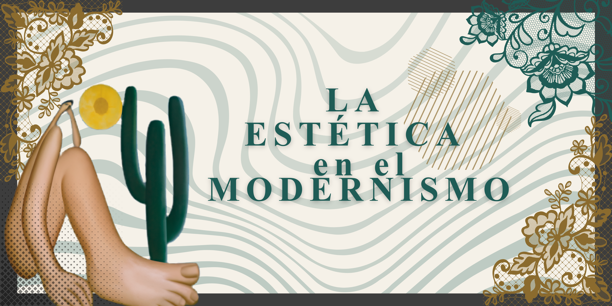

Bienvenido a esta página dedicada a la estética en el Modernismo, un movimiento artístico y literario que surgió a finales del siglo XIX y principios del siglo XX. Este movimiento buscó renovar las formas de expresión artística mediante la belleza, la imaginación y la búsqueda de nuevas sensaciones.
Aquí podrás conocer sus principales características, los ideales estéticos que defendía, su influencia en el arte y la literatura, así como el legado que dejó en la cultura moderna.
| Aspecto | Información |
|---|---|
| Movimiento | Modernismo |
| Origen | Finales del siglo XIX |
| Lugar de desarrollo | América Latina y Europa |
| Representante principal | Rubén Darío |
| Objetivo | Renovar el arte y la literatura |
| Características | Búsqueda de belleza, musicalidad y simbolismo |
| Importancia | Transformó la expresión artística de su época |
El Modernismo fue un movimiento artístico y literario que surgió a finales del siglo XIX como una respuesta al realismo y a las formas tradicionales de creación. Los artistas modernistas buscaban nuevas maneras de expresar la belleza y la sensibilidad humana, alejándose de lo cotidiano y explorando mundos idealizados, exóticos y llenos de imaginación.
Este movimiento tuvo una gran influencia en la literatura hispanoamericana y española, siendo Rubén Darío uno de sus máximos representantes. A través de sus obras, los modernistas promovieron una renovación del lenguaje, la musicalidad de las palabras y una mayor libertad creativa.
Además de ser una corriente literaria, el Modernismo también se manifestó en otras artes como la pintura, la arquitectura y las artes decorativas, convirtiéndose en una importante expresión cultural de su tiempo.
La estética modernista se caracteriza principalmente por la búsqueda constante de la belleza. Los autores y artistas daban gran importancia a la perfección formal, cuidando cada detalle de sus obras para provocar emociones y admiración en el público.
Otra característica importante fue el uso de un lenguaje elegante y musical. En la literatura, los escritores empleaban palabras cuidadosamente seleccionadas, ritmos armoniosos y figuras literarias que aportaban sonoridad y riqueza expresiva a los textos.
También destacaba el gusto por lo exótico, lo misterioso y lo refinado. Los modernistas encontraban inspiración en culturas lejanas, paisajes imaginarios, mitologías antiguas y elementos que representaban sofisticación y belleza.